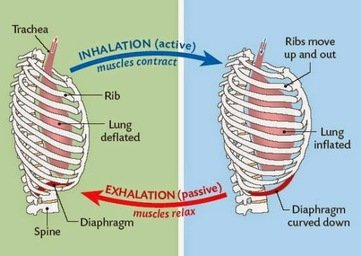
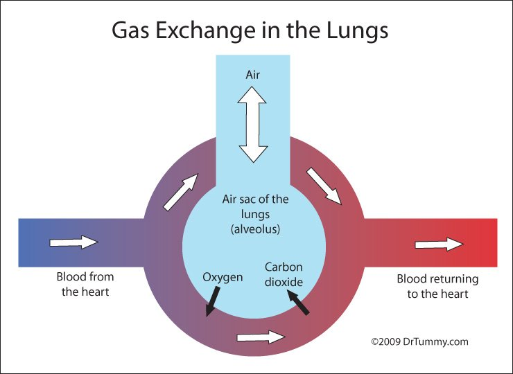
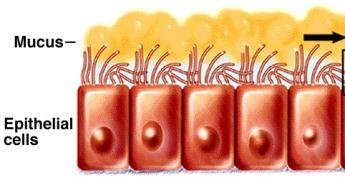
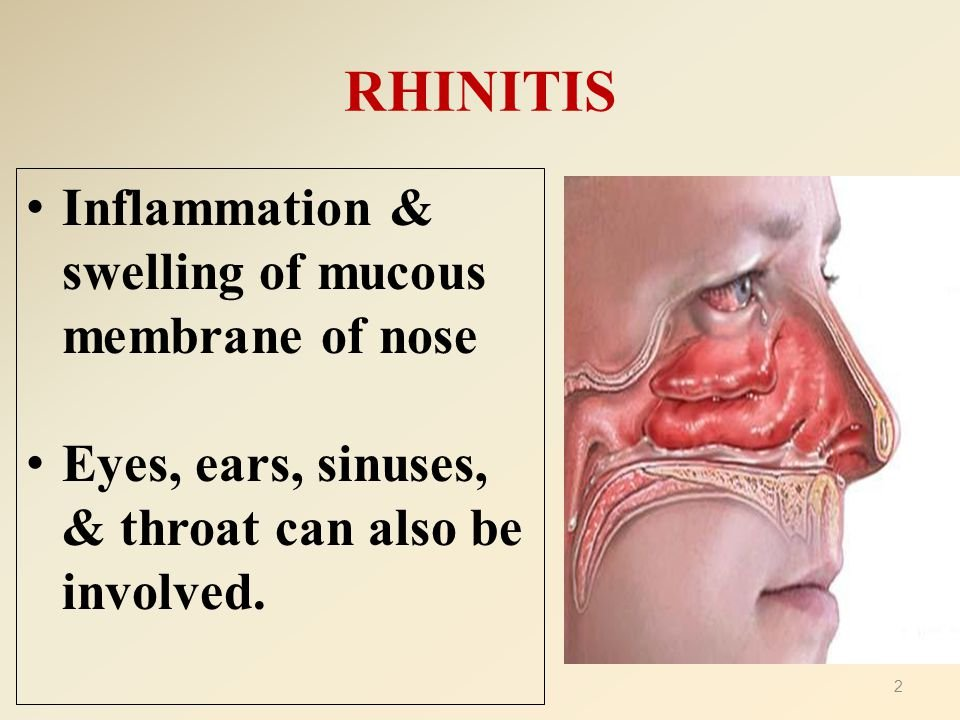
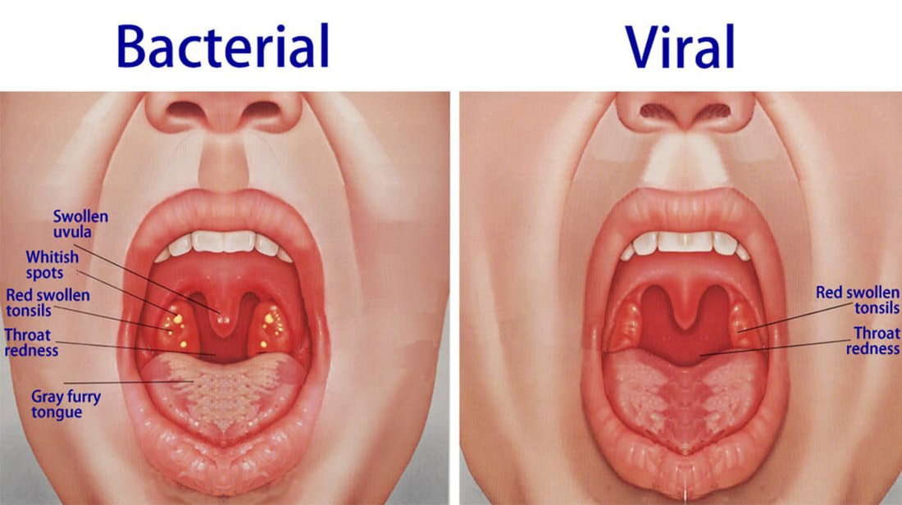
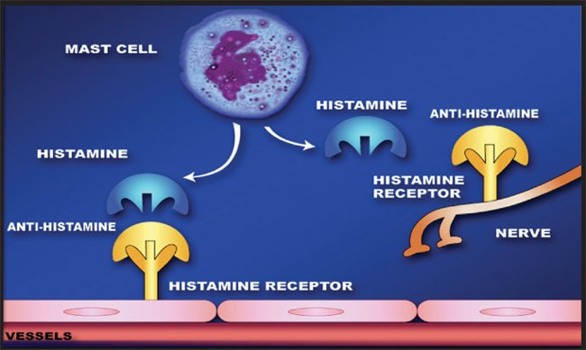

Week 2
Upper Respiratory Infections (URI)
Sputum & Airway Basics
Sputum is mucus secreted from the respiratory tract and coughed up. Cilia normally move mucus — and whatever particles it traps — out of the airway through coughing. Sputum can be cultured to check for infection, but its color alone isn't diagnostic (coughing up something yellow doesn't automatically mean an infection or a need for antibiotics). If the word purulent comes up, that usually does mean there's an infection.



Bronchitis & Influenza
Acute (Simple) Bronchitis
- Inflammation of the bronchi and bronchioles — not down at the alveolar level, so there's no airflow obstruction.
- About 80% viral; can be bacterial.
- Usually mild and self-limiting; lasts about 3–4 weeks.
- Symptoms: sore throat, runny nose, muscle aches, cough (~3 weeks), possible wheezing (not always present), productive cough, possible swollen lymph nodes.
- Diagnosed by symptoms and physical exam; a CBC with diff is sometimes used if there's concern about progression (age, comorbidities).
- Treatment: antibiotics if bacterial is suspected; otherwise supportive care — hydration, a cough suppressant, an expectorant.
Chronic Bronchitis
- Bronchitis symptoms for at least 3 months of the year, for at least 2 consecutive years.
- Usually related to cigarette smoking.
- Unlike acute bronchitis, it does involve airflow obstruction.
- Presents as exacerbations when it's active.
| Term | Detail |
|---|---|
| Influenza | Viral; types A and B are most common, and the virus can mutate. The vaccine composition changes yearly based on predictions of which strains are likely — not always accurate, but still worthwhile. |
| Vaccine Benefit | Doesn't necessarily prevent infection, but reduces the risk of severe illness and death by about 36%. |
| Onset | Rapid — fever, chills, body aches, feeling awful all at once. |
| Serious Complication | Secondary bacterial pneumonia (the flu virus damages the lungs' defenses, letting bacteria move in) — a major reason the flu vaccine is emphasized in elderly and comorbid patients. |
Histamine, Allergic Rhinitis & Sinusitis
What Histamine Does
- Stored in mast cells (skin and soft tissue) and basophils (blood).
- Skin: hives and itching.
- Blood vessels: vasodilation (redness); if released systemically, can cause hypotension.
- Airways: bronchoconstriction — shortness of breath.
- Also affects sleep-wake cycles and increases stomach acid secretion.
| Term | Detail |
|---|---|
| Allergic Rhinitis | Inflammation and swelling of the nasal mucous membranes from an IgE-mediated histamine release, triggered by environmental allergens. Affects the upper and lower airways and the eyes. Symptoms: sneezing, runny nose, itching, nasal congestion, watery/itchy eyes. |
| Sinusitis | Infection/inflammation of the facial sinuses — the cavity gets obstructed by fluid and edema, which lets bacteria grow. Often accompanies other URIs; more likely with nasal polyps, a deviated septum, or an allergic reaction. Viral sinusitis is self-limiting (5–7 days); bacterial can last up to 4 weeks — symptoms lasting longer than a week raise suspicion for bacterial. Distinguishing symptom: headache/facial pain or pressure over the sinuses (also: nasal obstruction, fatigue, drainage, ear pain, dental/jaw pain, cough, decreased sense of smell, sore throat). Treated with decongestants, antihistamines, and mucolytics to reduce secretions; antibiotics (at least 7 days) if bacterial; ENT referral if it keeps recurring. Taken more seriously than most URIs because of its proximity to the brain. |

Pharyngitis, Tonsillitis & Laryngitis/Croup
| Term | Detail |
|---|---|
| Pharyngitis | Inflammation of the palate, tonsils, and uvula (back of the throat). The key question is whether it's bacterial (strep) or viral — bacterial pharyngitis often shows white spots/exudate on the throat and tonsils, while viral typically doesn't. |
| Tonsillitis | The tonsils become so swollen they're nearly touching — a very painful sore throat with difficulty swallowing. Recurrent or severe cases sometimes lead to tonsil removal. |
| Laryngitis | Inflammation of the vocal cords/larynx. |
| Laryngotracheobronchitis (Croup) | Inflammation of the larynx, trachea, and bronchi together — produces the classic "barking" cough. |

Epiglottitis & Bronchospasm
Antihistamines (H1 Blockers)
Histamine has two receptor types: H1 receptors mediate smooth muscle contraction and capillary dilation — the target of antihistamines. H2 receptors mediate heart rate and gastric acid secretion — the target of H2 blockers, covered separately in GI/GERD content. Antihistamines are palliative — they block the histamine response, but don't treat the underlying cause of the allergy.

First-Generation (Sedating)
- Diphenhydramine (Benadryl) is the main one — the one that belongs on the drug matrix. Also meclizine, promethazine (motion sickness/nausea), and dimenhydrinate (Dramamine, motion sickness) — these three don't need to go on the drug matrix.
- Used for mild allergic reactions, motion sickness, and insomnia; can also treat/prevent severe anaphylactic reactions.
- Given PO (common OTC) or IV.
- Significant CNS depression — drowsiness, dizziness (the "Benadryl hangover"). Can cause paradoxical hyperactivity, especially in children.
- Mild anticholinergic effect — dries up secretions (helps the runny nose) but can also cause constipation and urinary retention.
Second-Generation (Non-Sedating)
- Loratadine, fexofenadine, cetirizine — all of these belong on the drug matrix.
- Same indications as first-generation, but fewer side effects and much less drowsiness — can be taken in the morning.
- Still some CNS effect possible at higher doses.
Antihistamine Cautions
- Closed-angle glaucoma, cardiac disease, kidney disease/uncontrolled hypertension, peptic ulcer disease, seizures, BPH, and pregnancy — use carefully given the anticholinergic effect and the potential to raise blood pressure.
- Nursing: monitor for dizziness with ambulation, monitor for urinary retention, and avoid driving or other tasks that need mental alertness — consider dosing a sedating antihistamine at night.
Decongestants, Cough Suppressants & Expectorants/Mucolytics
| Term | Detail |
|---|---|
| Decongestants | Phenylephrine and pseudoephedrine — sympathomimetics that activate alpha receptors, causing vasoconstriction that shrinks nasal blood vessels and opens the nasal passages. Side effects come from that sympathetic/CNS stimulation — agitation, anxiety, feeling "wired." Don't use for more than 4 days (risk of rebound nasal congestion); taper off if it's been used for 2–3 days. Pseudoephedrine works better, but is sold behind the counter with ID and purchase limits, since it's a methamphetamine precursor with abuse potential. Phenylephrine causes less CNS stimulation but is also less effective as a decongestant. |
| Cough Suppressants (Antitussives) | Dextromethorphan and benzonatate (Tessalon Perles) — both suppress the cough reflex directly in the brain. Coughing is usually a beneficial, protective response, so these are reserved for when it isn't — a dry, non-productive cough, or post-surgical chest pain from coughing too hard to sleep. Codeine is an opioid-based option, prescription only, and a CNS depressant — caution combining it with other depressants like diphenhydramine. Dextromethorphan is available OTC as a liquid and has its own abuse potential; benzonatate is prescription only. |
| Expectorants | Guaifenesin (Mucinex) reduces the surface tension of secretions to make mucus easier to cough up — it doesn't actually decrease mucus production, and its effectiveness is debated. Encourage hydration alongside it. Minimal side effects (some GI distress); use cautiously in patients with chronic cough or asthma. |
| Mucolytics | Acetylcysteine decreases mucus viscosity, used in chronic pulmonary conditions such as cystic fibrosis (it's also the antidote for acetaminophen overdose — a different indication). Has a strong, rotten-egg smell. Carries a bronchospasm risk, so it's best given by nebulizer — monitor lung sounds closely. |
Self-Test Flashcards
Click a card to flip it and check your answer.